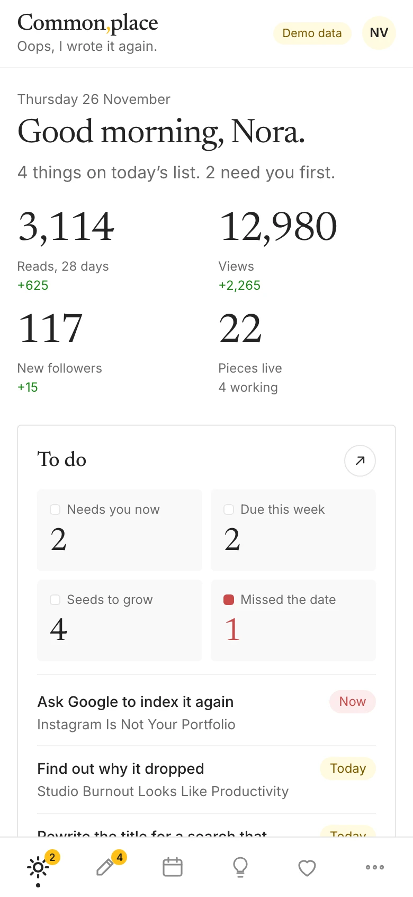

07:30Kitchen, phone
“What needs me first?”
Before coffee is finished, Nora opens Commonplace on the phone. The first line answers her question: four things on today's list, two need her first. The numbers come second.
Why it looks like this
A count before a chart: a writer does not start the day by reading analytics. On the phone the side panel becomes a bottom bar with the five daily tabs.
